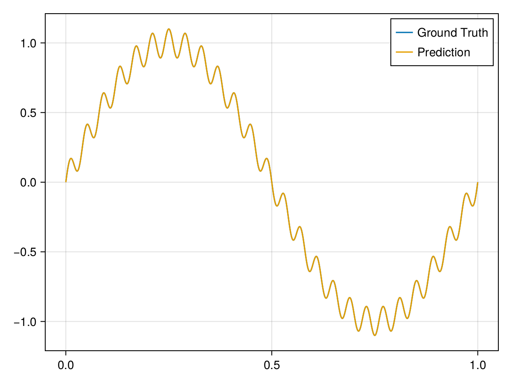

1D Poisson's Equation
This example is taken from [4]. Consider a simple 1D Poisson’s equation with Dirichlet boundary conditions. The solution is given by
\[u(x)=\sin (2 \pi x)+0.1 \sin (50 \pi x)\]
using ModelingToolkit, IntervalSets, Sophon
using Optimization, OptimizationOptimJL, Zygote
using CairoMakie
@parameters x
@variables u(..)
Dₓ² = Differential(x)^2
f(x) = -4 * π^2 * sin(2 * π * x) - 250 * π^2 * sin(50 * π * x)
eq = Dₓ²(u(x)) ~ f(x)
domain = [x ∈ 0 .. 1]
bcs = [u(0) ~ 0, u(1) ~ 0]
@named poisson = PDESystem(eq, bcs, domain, [x], [u(x)])\[ \begin{align} \frac{\mathrm{d}}{\mathrm{d}x} \frac{\mathrm{d} u\left( x \right)}{\mathrm{d}x} =& - 39.478 \sin\left( 6.2832 x \right) - 2467.4 \sin\left( 157.08 x \right) \end{align} \]
chain = Siren(1, 16, 32, 16, 1)
pinn = PINN(chain)
sampler = QuasiRandomSampler(200, 1)
strategy = NonAdaptiveTraining(1 , 50)
prob = Sophon.discretize(poisson, pinn, sampler, strategy)
@showprogress res = Optimization.solve(prob, BFGS(); maxiters=2000)
phi = pinn.phi
xs = 0:0.001:1
u_true = @. sin(2 * pi * xs) + 0.1 * sin(50 * pi * xs)
us = phi(xs', res.u)
fig = Figure()
axis = Axis(fig[1, 1])
lines!(xs, u_true; label="Ground Truth")
lines!(xs, vec(us); label="Prediction")
axislegend(axis)
fig
0.0%┣ ┫ 1/2.0k [00:20<Inf:Inf, InfGs/it]
3.687249e+06 0.1%┣ ┫ 2/2.0k [00:20<11:01:30, 20s/it]
3.016728e+06 0.1%┣ ┫ 3/2.0k [00:20<05:31:49, 10s/it]
2.799223e+06 0.2%┣ ┫ 4/2.0k [00:20<03:42:11, 7s/it]
2.593727e+06 0.2%┣ ┫ 5/2.0k [00:20<02:47:45, 5s/it]
2.349256e+06 0.3%┣ ┫ 6/2.0k [00:20<02:14:32, 4s/it]
1.967595e+06 0.3%┣ ┫ 7/2.0k [00:20<01:52:32, 3s/it]
1.874130e+06 0.4%┣▏ ┫ 8/2.0k [00:20<01:36:41, 3s/it]
1.850949e+06 0.4%┣▏ ┫ 9/2.0k [00:20<01:24:53, 3s/it]
1.734018e+06 0.5%┣▏ ┫ 10/2.0k [00:21<01:15:57, 2s/it]
1.667616e+06 0.5%┣▏ ┫ 11/2.0k [00:21<01:08:34, 2s/it]
1.529575e+06 0.6%┣▏ ┫ 12/2.0k [00:21<01:02:30, 2s/it]
1.452332e+06 0.6%┣▏ ┫ 13/2.0k [00:21<57:29, 2s/it]
1.396178e+06 0.7%┣▎ ┫ 14/2.0k [00:21<53:15, 2s/it]
1.318164e+06 0.7%┣▎ ┫ 15/2.0k [00:21<49:42, 2s/it]
1.246803e+06 0.8%┣▎ ┫ 16/2.0k [00:21<46:30, 1s/it]
1.182296e+06 0.8%┣▎ ┫ 17/2.0k [00:21<43:43, 1s/it]
1.110743e+06 0.9%┣▎ ┫ 18/2.0k [00:21<41:15, 1s/it]
1.051656e+06 0.9%┣▎ ┫ 19/2.0k [00:21<39:05, 1s/it]
9.753187e+05 1.0%┣▎ ┫ 20/2.0k [00:21<37:07, 1s/it]
9.544630e+05 1.0%┣▍ ┫ 21/2.0k [00:21<35:25, 1s/it]
8.294083e+05 1.1%┣▍ ┫ 22/2.0k [00:22<33:49, 1s/it]
7.532046e+05 1.1%┣▍ ┫ 23/2.0k [00:22<32:23, 1it/s]
6.503855e+05 1.2%┣▍ ┫ 24/2.0k [00:22<31:04, 1it/s]
5.712806e+05 1.2%┣▍ ┫ 25/2.0k [00:22<29:52, 1it/s]
5.229110e+05 1.3%┣▍ ┫ 26/2.0k [00:22<28:47, 1it/s]
4.810070e+05 1.3%┣▍ ┫ 27/2.0k [00:22<27:45, 1it/s]
4.231839e+05 1.4%┣▌ ┫ 28/2.0k [00:22<26:47, 1it/s]
3.748783e+05 1.4%┣▌ ┫ 29/2.0k [00:22<25:54, 1it/s]
3.325009e+05 1.5%┣▌ ┫ 30/2.0k [00:22<25:04, 1it/s]
2.932228e+05 1.5%┣▌ ┫ 31/2.0k [00:22<24:21, 1it/s]
2.296430e+05 1.6%┣▌ ┫ 32/2.0k [00:22<23:37, 1it/s]
2.077682e+05 1.6%┣▌ ┫ 33/2.0k [00:22<22:56, 1it/s]
1.803278e+05 1.7%┣▌ ┫ 34/2.0k [00:22<22:19, 1it/s]
1.591974e+05 1.7%┣▋ ┫ 35/2.0k [00:23<21:43, 2it/s]
1.418064e+05 1.8%┣▋ ┫ 36/2.0k [00:23<21:10, 2it/s]
1.232340e+05 1.8%┣▋ ┫ 37/2.0k [00:23<20:38, 2it/s]
1.188881e+05 1.9%┣▋ ┫ 38/2.0k [00:23<20:07, 2it/s]
1.077311e+05 1.9%┣▋ ┫ 39/2.0k [00:23<19:38, 2it/s]
9.826872e+04 2.0%┣▋ ┫ 40/2.0k [00:23<19:10, 2it/s]
8.826507e+04 2.0%┣▋ ┫ 41/2.0k [00:23<18:44, 2it/s]
8.187875e+04 2.1%┣▊ ┫ 42/2.0k [00:23<18:20, 2it/s]
7.322824e+04 2.1%┣▊ ┫ 43/2.0k [00:23<17:56, 2it/s]
6.631895e+04 2.2%┣▊ ┫ 44/2.0k [00:23<17:33, 2it/s]
5.893821e+04 2.2%┣▊ ┫ 45/2.0k [00:23<17:12, 2it/s]
5.671810e+04 2.3%┣▊ ┫ 46/2.0k [00:23<16:51, 2it/s]
4.758161e+04 2.3%┣▊ ┫ 47/2.0k [00:23<16:33, 2it/s]
4.065279e+04 2.4%┣▊ ┫ 48/2.0k [00:23<16:13, 2it/s]
3.830858e+04 2.4%┣▉ ┫ 49/2.0k [00:23<15:55, 2it/s]
3.204164e+04 2.5%┣▉ ┫ 50/2.0k [00:24<15:38, 2it/s]
2.704826e+04 2.5%┣▉ ┫ 51/2.0k [00:24<15:21, 2it/s]
2.329090e+04 2.6%┣▉ ┫ 52/2.0k [00:24<15:05, 2it/s]
2.060940e+04 2.6%┣▉ ┫ 53/2.0k [00:24<14:50, 2it/s]
1.863391e+04 2.7%┣▉ ┫ 54/2.0k [00:24<14:35, 2it/s]
1.445327e+04 2.8%┣█ ┫ 56/2.0k [00:24<14:06, 2it/s]
1.222592e+04 2.9%┣█ ┫ 58/2.0k [00:24<13:39, 2it/s]
1.086677e+04 2.9%┣█ ┫ 59/2.0k [00:24<13:26, 2it/s]
9.947117e+03 3.0%┣█ ┫ 60/2.0k [00:24<13:14, 2it/s]
9.297021e+03 3.0%┣█ ┫ 61/2.0k [00:24<13:03, 2it/s]
8.482200e+03 3.1%┣█ ┫ 62/2.0k [00:24<12:51, 3it/s]
8.136126e+03 3.1%┣█ ┫ 63/2.0k [00:24<12:40, 3it/s]
7.028370e+03 3.2%┣█ ┫ 65/2.0k [00:24<12:18, 3it/s]
6.566331e+03 3.3%┣█ ┫ 66/2.0k [00:24<12:08, 3it/s]
5.969739e+03 3.3%┣█ ┫ 67/2.0k [00:25<11:59, 3it/s]
5.312190e+03 3.4%┣█ ┫ 69/2.0k [00:25<11:40, 3it/s]
5.130354e+03 3.5%┣█▏ ┫ 70/2.0k [00:25<11:31, 3it/s]
4.828151e+03 3.5%┣█▏ ┫ 71/2.0k [00:25<11:22, 3it/s]
4.451421e+03 3.6%┣█▏ ┫ 72/2.0k [00:25<11:14, 3it/s]
4.045530e+03 3.7%┣█▏ ┫ 74/2.0k [00:25<10:58, 3it/s]
3.836022e+03 3.7%┣█▏ ┫ 75/2.0k [00:25<10:50, 3it/s]
3.399210e+03 3.8%┣█▎ ┫ 77/2.0k [00:25<10:34, 3it/s]
3.272857e+03 3.9%┣█▎ ┫ 78/2.0k [00:25<10:27, 3it/s]
3.087247e+03 4.0%┣█▎ ┫ 80/2.0k [00:25<10:13, 3it/s]
2.927304e+03 4.0%┣█▎ ┫ 81/2.0k [00:25<10:07, 3it/s]
2.815682e+03 4.1%┣█▎ ┫ 82/2.0k [00:25<10:00, 3it/s]
2.693424e+03 4.1%┣█▎ ┫ 83/2.0k [00:25<09:54, 3it/s]
2.569423e+03 4.2%┣█▍ ┫ 84/2.0k [00:25<09:47, 3it/s]
2.205547e+03 4.3%┣█▍ ┫ 86/2.0k [00:26<09:35, 3it/s]
1.997215e+03 4.4%┣█▍ ┫ 88/2.0k [00:26<09:25, 3it/s]
1.731550e+03 4.5%┣█▍ ┫ 90/2.0k [00:26<09:14, 3it/s]
1.541743e+03 4.6%┣█▌ ┫ 92/2.0k [00:26<09:03, 4it/s]
1.386163e+03 4.7%┣█▌ ┫ 94/2.0k [00:26<08:53, 4it/s]
1.301592e+03 4.7%┣█▌ ┫ 95/2.0k [00:26<08:48, 4it/s]
1.138224e+03 4.8%┣█▌ ┫ 97/2.0k [00:26<08:39, 4it/s]
1.026856e+03 4.9%┣█▋ ┫ 98/2.0k [00:26<08:34, 4it/s]
8.500193e+02 5.0%┣█▌ ┫ 100/2.0k [00:26<08:25, 4it/s]
7.499472e+02 5.1%┣█▋ ┫ 102/2.0k [00:26<08:16, 4it/s]
6.905464e+02 5.1%┣█▋ ┫ 103/2.0k [00:26<08:12, 4it/s]
6.086530e+02 5.2%┣█▋ ┫ 105/2.0k [00:27<08:04, 4it/s]
5.506066e+02 5.3%┣█▋ ┫ 107/2.0k [00:27<07:56, 4it/s]
4.674990e+02 5.4%┣█▊ ┫ 109/2.0k [00:27<07:48, 4it/s]
4.396545e+02 5.5%┣█▊ ┫ 110/2.0k [00:27<07:45, 4it/s]
4.137001e+02 5.5%┣█▊ ┫ 111/2.0k [00:27<07:41, 4it/s]
3.810266e+02 5.6%┣█▊ ┫ 113/2.0k [00:27<07:34, 4it/s]
3.502825e+02 5.7%┣█▉ ┫ 115/2.0k [00:27<07:27, 4it/s]
3.116843e+02 5.8%┣█▉ ┫ 117/2.0k [00:27<07:20, 4it/s]
2.945479e+02 5.9%┣█▉ ┫ 118/2.0k [00:27<07:17, 4it/s]
2.607077e+02 6.0%┣█▉ ┫ 120/2.0k [00:27<07:11, 4it/s]
2.409911e+02 6.1%┣██ ┫ 122/2.0k [00:27<07:05, 4it/s]
2.254114e+02 6.2%┣██ ┫ 124/2.0k [00:27<06:58, 4it/s]
2.088430e+02 6.3%┣██ ┫ 126/2.0k [00:28<06:53, 5it/s]
2.029867e+02 6.3%┣██ ┫ 127/2.0k [00:28<06:50, 5it/s]
1.918758e+02 6.4%┣██ ┫ 129/2.0k [00:28<06:44, 5it/s]
1.785412e+02 6.5%┣██ ┫ 131/2.0k [00:28<06:39, 5it/s]
1.659480e+02 6.6%┣██ ┫ 133/2.0k [00:28<06:34, 5it/s]
1.526760e+02 6.7%┣██ ┫ 135/2.0k [00:28<06:29, 5it/s]
1.427205e+02 6.8%┣██▏ ┫ 137/2.0k [00:28<06:23, 5it/s]
1.319246e+02 6.9%┣██▏ ┫ 139/2.0k [00:28<06:18, 5it/s]
1.265358e+02 7.0%┣██▏ ┫ 141/2.0k [00:28<06:14, 5it/s]
1.190565e+02 7.1%┣██▏ ┫ 143/2.0k [00:28<06:09, 5it/s]
1.082568e+02 7.2%┣██▎ ┫ 145/2.0k [00:28<06:05, 5it/s]
1.019797e+02 7.3%┣██▎ ┫ 147/2.0k [00:28<06:00, 5it/s]
9.600458e+01 7.4%┣██▎ ┫ 149/2.0k [00:28<05:56, 5it/s]
8.992210e+01 7.5%┣██▍ ┫ 151/2.0k [00:29<05:52, 5it/s]
8.135230e+01 7.6%┣██▍ ┫ 153/2.0k [00:29<05:47, 5it/s]
7.686698e+01 7.7%┣██▍ ┫ 154/2.0k [00:29<05:46, 5it/s]
6.904921e+01 7.8%┣██▍ ┫ 156/2.0k [00:29<05:42, 5it/s]
6.495923e+01 7.9%┣██▌ ┫ 158/2.0k [00:29<05:38, 5it/s]
6.229605e+01 8.0%┣██▌ ┫ 160/2.0k [00:29<05:34, 6it/s]
5.974095e+01 8.0%┣██▌ ┫ 161/2.0k [00:29<05:32, 6it/s]
5.566049e+01 8.1%┣██▌ ┫ 163/2.0k [00:29<05:29, 6it/s]
5.191041e+01 8.2%┣██▋ ┫ 165/2.0k [00:29<05:25, 6it/s]
4.858172e+01 8.3%┣██▋ ┫ 167/2.0k [00:29<05:22, 6it/s]
4.650186e+01 8.4%┣██▋ ┫ 169/2.0k [00:29<05:18, 6it/s]
4.397840e+01 8.5%┣██▋ ┫ 171/2.0k [00:29<05:15, 6it/s]
4.252310e+01 8.6%┣██▊ ┫ 173/2.0k [00:29<05:11, 6it/s]
4.219990e+01 8.7%┣██▊ ┫ 174/2.0k [00:29<05:10, 6it/s]
4.010396e+01 8.8%┣██▊ ┫ 176/2.0k [00:29<05:07, 6it/s]
3.886346e+01 8.9%┣██▊ ┫ 178/2.0k [00:30<05:04, 6it/s]
3.702093e+01 9.0%┣██▉ ┫ 180/2.0k [00:30<05:01, 6it/s]
3.487924e+01 9.1%┣██▉ ┫ 182/2.0k [00:30<04:58, 6it/s]
3.348214e+01 9.2%┣██▉ ┫ 184/2.0k [00:30<04:55, 6it/s]
3.274482e+01 9.2%┣██▉ ┫ 185/2.0k [00:30<04:54, 6it/s]
3.104629e+01 9.3%┣███ ┫ 187/2.0k [00:30<04:51, 6it/s]
2.923060e+01 9.4%┣███ ┫ 189/2.0k [00:30<04:48, 6it/s]
2.735956e+01 9.5%┣███ ┫ 191/2.0k [00:30<04:45, 6it/s]
2.603638e+01 9.6%┣███ ┫ 193/2.0k [00:30<04:43, 6it/s]
2.472359e+01 9.7%┣███ ┫ 195/2.0k [00:30<04:40, 6it/s]
2.328968e+01 9.8%┣███ ┫ 197/2.0k [00:30<04:38, 6it/s]
2.188993e+01 9.9%┣███ ┫ 199/2.0k [00:30<04:35, 7it/s]
2.066509e+01 10.0%┣███ ┫ 201/2.0k [00:30<04:33, 7it/s]
1.922760e+01 10.2%┣███ ┫ 204/2.0k [00:30<04:29, 7it/s]
1.828871e+01 10.3%┣███ ┫ 206/2.0k [00:30<04:27, 7it/s]
1.743255e+01 10.4%┣███▏ ┫ 208/2.0k [00:31<04:24, 7it/s]
1.636769e+01 10.5%┣███▏ ┫ 210/2.0k [00:31<04:22, 7it/s]
1.556716e+01 10.6%┣███▏ ┫ 212/2.0k [00:31<04:20, 7it/s]
1.495780e+01 10.7%┣███▏ ┫ 214/2.0k [00:31<04:18, 7it/s]
1.382506e+01 10.8%┣███▎ ┫ 216/2.0k [00:31<04:15, 7it/s]
1.352458e+01 10.8%┣███▎ ┫ 217/2.0k [00:31<04:15, 7it/s]
1.292824e+01 10.9%┣███▎ ┫ 219/2.0k [00:31<04:12, 7it/s]
1.217463e+01 11.0%┣███▎ ┫ 221/2.0k [00:31<04:10, 7it/s]
1.131087e+01 11.1%┣███▍ ┫ 223/2.0k [00:31<04:08, 7it/s]
1.046380e+01 11.2%┣███▍ ┫ 225/2.0k [00:31<04:06, 7it/s]
9.773248e+00 11.3%┣███▍ ┫ 227/2.0k [00:31<04:04, 7it/s]
8.958232e+00 11.4%┣███▍ ┫ 229/2.0k [00:31<04:02, 7it/s]
8.192393e+00 11.6%┣███▌ ┫ 232/2.0k [00:31<03:59, 7it/s]
7.816585e+00 11.7%┣███▌ ┫ 234/2.0k [00:31<03:58, 7it/s]
7.352166e+00 11.8%┣███▌ ┫ 236/2.0k [00:31<03:56, 7it/s]
6.679582e+00 11.9%┣███▋ ┫ 239/2.0k [00:31<03:53, 8it/s]
6.354195e+00 12.1%┣███▋ ┫ 242/2.0k [00:32<03:50, 8it/s]
6.145783e+00 12.2%┣███▋ ┫ 244/2.0k [00:32<03:48, 8it/s]
5.992693e+00 12.3%┣███▊ ┫ 247/2.0k [00:32<03:46, 8it/s]
5.652736e+00 12.5%┣███▊ ┫ 250/2.0k [00:32<03:43, 8it/s]
5.365139e+00 12.6%┣███▉ ┫ 253/2.0k [00:32<03:41, 8it/s]
5.140968e+00 12.7%┣███▉ ┫ 255/2.0k [00:32<03:39, 8it/s]
4.924108e+00 12.8%┣███▉ ┫ 257/2.0k [00:32<03:37, 8it/s]
4.709006e+00 13.0%┣████ ┫ 260/2.0k [00:32<03:35, 8it/s]
4.569934e+00 13.1%┣████ ┫ 262/2.0k [00:32<03:33, 8it/s]
4.262312e+00 13.2%┣████ ┫ 265/2.0k [00:32<03:31, 8it/s]
4.074901e+00 13.3%┣████ ┫ 267/2.0k [00:32<03:30, 8it/s]
3.895033e+00 13.4%┣████ ┫ 269/2.0k [00:32<03:28, 8it/s]
3.708010e+00 13.6%┣████ ┫ 272/2.0k [00:32<03:26, 8it/s]
3.517270e+00 13.7%┣████▏ ┫ 275/2.0k [00:32<03:24, 8it/s]
3.334877e+00 13.9%┣████▏ ┫ 278/2.0k [00:32<03:22, 9it/s]
3.107648e+00 14.0%┣████▏ ┫ 281/2.0k [00:33<03:20, 9it/s]
2.935605e+00 14.2%┣████▎ ┫ 284/2.0k [00:33<03:18, 9it/s]
2.794504e+00 14.3%┣████▎ ┫ 287/2.0k [00:33<03:16, 9it/s]
2.666167e+00 14.5%┣████▍ ┫ 290/2.0k [00:33<03:14, 9it/s]
2.484609e+00 14.6%┣████▍ ┫ 293/2.0k [00:33<03:12, 9it/s]
2.350675e+00 14.8%┣████▍ ┫ 296/2.0k [00:33<03:10, 9it/s]
2.265988e+00 14.9%┣████▌ ┫ 299/2.0k [00:33<03:08, 9it/s]
2.190719e+00 15.1%┣████▌ ┫ 302/2.0k [00:33<03:06, 9it/s]
2.083366e+00 15.2%┣████▋ ┫ 305/2.0k [00:33<03:04, 9it/s]
2.001454e+00 15.4%┣████▋ ┫ 308/2.0k [00:33<03:03, 9it/s]
1.897563e+00 15.5%┣████▋ ┫ 311/2.0k [00:33<03:01, 9it/s]
1.826827e+00 15.7%┣████▊ ┫ 314/2.0k [00:33<02:59, 9it/s]
1.759040e+00 15.8%┣████▊ ┫ 316/2.0k [00:33<02:58, 9it/s]
1.676413e+00 15.9%┣████▋ ┫ 319/2.0k [00:33<02:57, 10it/s]
1.572775e+00 16.1%┣████▊ ┫ 322/2.0k [00:33<02:55, 10it/s]
1.460022e+00 16.2%┣████▊ ┫ 325/2.0k [00:33<02:53, 10it/s]
1.366123e+00 16.4%┣████▊ ┫ 328/2.0k [00:34<02:52, 10it/s]
1.308952e+00 16.5%┣████▉ ┫ 330/2.0k [00:34<02:51, 10it/s]
1.187019e+00 16.6%┣████▉ ┫ 333/2.0k [00:34<02:49, 10it/s]
1.128470e+00 16.7%┣████▉ ┫ 335/2.0k [00:34<02:48, 10it/s]
1.054182e+00 16.9%┣█████ ┫ 338/2.0k [00:34<02:47, 10it/s]
9.891104e-01 17.0%┣█████ ┫ 341/2.0k [00:34<02:45, 10it/s]
9.404362e-01 17.2%┣█████ ┫ 344/2.0k [00:34<02:44, 10it/s]
9.242868e-01 17.3%┣█████ ┫ 346/2.0k [00:34<02:43, 10it/s]
8.903608e-01 17.4%┣█████ ┫ 349/2.0k [00:34<02:42, 10it/s]
8.396299e-01 17.6%┣█████▏ ┫ 353/2.0k [00:34<02:40, 10it/s]
7.943028e-01 17.9%┣█████▏ ┫ 358/2.0k [00:34<02:37, 10it/s]
7.615860e-01 18.0%┣█████▎ ┫ 361/2.0k [00:34<02:36, 11it/s]
7.453710e-01 18.1%┣█████▎ ┫ 363/2.0k [00:34<02:35, 11it/s]
7.067483e-01 18.3%┣█████▎ ┫ 367/2.0k [00:34<02:34, 11it/s]
6.782401e-01 18.5%┣█████▍ ┫ 370/2.0k [00:34<02:32, 11it/s]
6.373948e-01 18.7%┣█████▍ ┫ 375/2.0k [00:35<02:30, 11it/s]
6.086799e-01 18.9%┣█████▌ ┫ 379/2.0k [00:35<02:28, 11it/s]
5.870873e-01 19.1%┣█████▌ ┫ 383/2.0k [00:35<02:27, 11it/s]
5.617611e-01 19.3%┣█████▋ ┫ 387/2.0k [00:35<02:25, 11it/s]
5.304783e-01 19.5%┣█████▊ ┫ 391/2.0k [00:35<02:24, 11it/s]
4.888558e-01 19.8%┣█████▊ ┫ 396/2.0k [00:35<02:22, 11it/s]
4.600697e-01 20.0%┣█████▉ ┫ 401/2.0k [00:35<02:20, 11it/s]
4.316363e-01 20.2%┣█████▉ ┫ 405/2.0k [00:35<02:18, 12it/s]
4.075348e-01 20.5%┣██████ ┫ 410/2.0k [00:35<02:16, 12it/s]
3.821375e-01 20.7%┣██████ ┫ 415/2.0k [00:35<02:14, 12it/s]
3.604446e-01 20.9%┣██████ ┫ 419/2.0k [00:35<02:13, 12it/s]
3.291269e-01 21.2%┣██████▏ ┫ 424/2.0k [00:35<02:11, 12it/s]
3.124499e-01 21.4%┣██████▏ ┫ 429/2.0k [00:35<02:10, 12it/s]
2.973808e-01 21.7%┣██████▎ ┫ 434/2.0k [00:35<02:08, 12it/s]
2.824897e-01 21.8%┣██████▍ ┫ 437/2.0k [00:35<02:07, 12it/s]
2.659404e-01 22.1%┣██████▍ ┫ 442/2.0k [00:35<02:05, 12it/s]
2.500431e-01 22.3%┣██████▌ ┫ 447/2.0k [00:36<02:04, 13it/s]
2.346858e-01 22.6%┣██████▌ ┫ 452/2.0k [00:36<02:02, 13it/s]
2.189178e-01 22.9%┣██████▋ ┫ 458/2.0k [00:36<02:00, 13it/s]
2.031678e-01 23.2%┣██████▊ ┫ 465/2.0k [00:36<01:58, 13it/s]
1.877473e-01 23.5%┣██████▉ ┫ 471/2.0k [00:36<01:56, 13it/s]
1.739303e-01 23.8%┣███████ ┫ 477/2.0k [00:36<01:55, 13it/s]
1.648065e-01 24.1%┣███████ ┫ 482/2.0k [00:36<01:53, 13it/s]
1.540131e-01 24.4%┣███████ ┫ 488/2.0k [00:36<01:52, 14it/s]
1.431633e-01 24.7%┣███████▏ ┫ 495/2.0k [00:36<01:50, 14it/s]
1.311931e-01 25.1%┣███████▎ ┫ 502/2.0k [00:36<01:48, 14it/s]
1.210777e-01 25.4%┣███████▍ ┫ 509/2.0k [00:36<01:46, 14it/s]
1.137955e-01 25.7%┣███████▌ ┫ 514/2.0k [00:36<01:45, 14it/s]
1.053258e-01 26.0%┣███████▌ ┫ 521/2.0k [00:36<01:43, 14it/s]
9.560892e-02 26.4%┣███████▋ ┫ 528/2.0k [00:36<01:41, 15it/s]
8.799748e-02 26.7%┣███████▊ ┫ 535/2.0k [00:36<01:40, 15it/s]
8.215089e-02 27.1%┣███████▉ ┫ 542/2.0k [00:36<01:38, 15it/s]
8.052627e-02 27.2%┣███████▉ ┫ 544/2.0k [00:36<01:38, 15it/s]
7.823881e-02 27.3%┣████████ ┫ 547/2.0k [00:36<01:37, 15it/s]
7.429586e-02 27.7%┣████████ ┫ 554/2.0k [00:37<01:36, 15it/s]
7.085252e-02 28.0%┣████████▏ ┫ 560/2.0k [00:37<01:34, 15it/s]
6.686093e-02 28.3%┣████████▏ ┫ 566/2.0k [00:37<01:33, 15it/s]
6.376571e-02 28.6%┣████████▎ ┫ 572/2.0k [00:37<01:32, 16it/s]
6.166225e-02 28.8%┣████████▍ ┫ 576/2.0k [00:37<01:31, 16it/s]
5.750279e-02 29.1%┣████████▌ ┫ 583/2.0k [00:37<01:30, 16it/s]
5.350779e-02 29.5%┣████████▌ ┫ 590/2.0k [00:37<01:28, 16it/s]
5.034308e-02 29.8%┣████████▋ ┫ 597/2.0k [00:37<01:27, 16it/s]
4.775199e-02 30.2%┣████████▊ ┫ 604/2.0k [00:37<01:26, 16it/s]
4.610843e-02 30.4%┣████████▉ ┫ 608/2.0k [00:37<01:25, 16it/s]
4.333277e-02 30.7%┣█████████ ┫ 615/2.0k [00:37<01:24, 17it/s]
4.055534e-02 31.0%┣█████████ ┫ 621/2.0k [00:37<01:23, 17it/s]
3.786397e-02 31.3%┣█████████ ┫ 627/2.0k [00:37<01:22, 17it/s]
3.553254e-02 31.6%┣█████████▏ ┫ 633/2.0k [00:37<01:21, 17it/s]
3.359253e-02 31.9%┣█████████▎ ┫ 639/2.0k [00:37<01:20, 17it/s]
3.122103e-02 32.3%┣█████████▍ ┫ 646/2.0k [00:37<01:19, 17it/s]
2.905806e-02 32.6%┣█████████▌ ┫ 653/2.0k [00:37<01:17, 17it/s]
2.705599e-02 32.9%┣█████████▌ ┫ 659/2.0k [00:37<01:16, 18it/s]
2.549941e-02 33.2%┣█████████▋ ┫ 665/2.0k [00:38<01:16, 18it/s]
2.422352e-02 33.5%┣█████████▊ ┫ 671/2.0k [00:38<01:15, 18it/s]
2.285028e-02 33.9%┣█████████▉ ┫ 678/2.0k [00:38<01:14, 18it/s]
2.148411e-02 34.2%┣██████████ ┫ 684/2.0k [00:38<01:13, 18it/s]
2.021005e-02 34.5%┣██████████ ┫ 690/2.0k [00:38<01:12, 18it/s]
1.917471e-02 34.8%┣██████████ ┫ 696/2.0k [00:38<01:11, 18it/s]
1.819583e-02 35.1%┣██████████▏ ┫ 702/2.0k [00:38<01:10, 18it/s]
1.739089e-02 35.4%┣██████████▎ ┫ 709/2.0k [00:38<01:09, 19it/s]
1.665738e-02 35.8%┣██████████▍ ┫ 716/2.0k [00:38<01:08, 19it/s]
1.577176e-02 36.1%┣██████████▌ ┫ 723/2.0k [00:38<01:07, 19it/s]
1.482454e-02 36.5%┣██████████▋ ┫ 730/2.0k [00:38<01:06, 19it/s]
1.430615e-02 36.7%┣██████████▋ ┫ 734/2.0k [00:38<01:06, 19it/s]
1.349637e-02 37.0%┣██████████▊ ┫ 741/2.0k [00:38<01:05, 19it/s]
1.299996e-02 37.3%┣██████████▉ ┫ 747/2.0k [00:38<01:04, 19it/s]
1.250176e-02 37.6%┣███████████ ┫ 753/2.0k [00:38<01:04, 20it/s]
1.186662e-02 37.9%┣███████████ ┫ 759/2.0k [00:38<01:03, 20it/s]
1.143545e-02 38.2%┣███████████ ┫ 765/2.0k [00:38<01:02, 20it/s]
1.095586e-02 38.6%┣███████████▏ ┫ 772/2.0k [00:39<01:01, 20it/s]
1.059362e-02 38.9%┣███████████▎ ┫ 778/2.0k [00:39<01:01, 20it/s]
1.019434e-02 39.2%┣███████████▍ ┫ 784/2.0k [00:39<01:00, 20it/s]
9.776690e-03 39.5%┣███████████▌ ┫ 791/2.0k [00:39<00:59, 20it/s]
9.445892e-03 39.8%┣███████████▌ ┫ 797/2.0k [00:39<00:59, 21it/s]
9.146112e-03 40.2%┣███████████▋ ┫ 804/2.0k [00:39<00:58, 21it/s]
8.858313e-03 40.5%┣███████████▊ ┫ 810/2.0k [00:39<00:57, 21it/s]
8.521814e-03 40.8%┣███████████▉ ┫ 816/2.0k [00:39<00:57, 21it/s]
8.167949e-03 41.1%┣████████████ ┫ 822/2.0k [00:39<00:56, 21it/s]
7.952144e-03 41.4%┣████████████ ┫ 828/2.0k [00:39<00:55, 21it/s]
7.675209e-03 41.6%┣████████████ ┫ 832/2.0k [00:39<00:55, 21it/s]
7.294012e-03 41.9%┣████████████▏ ┫ 839/2.0k [00:39<00:54, 21it/s]
7.024751e-03 42.2%┣████████████▎ ┫ 845/2.0k [00:39<00:54, 22it/s]
6.687432e-03 42.5%┣████████████▍ ┫ 851/2.0k [00:39<00:53, 22it/s]
6.452674e-03 42.8%┣████████████▍ ┫ 857/2.0k [00:39<00:53, 22it/s]
6.354092e-03 43.1%┣████████████▌ ┫ 862/2.0k [00:39<00:52, 22it/s]
6.084379e-03 43.4%┣████████████▋ ┫ 869/2.0k [00:39<00:51, 22it/s]
5.931764e-03 43.8%┣████████████▊ ┫ 877/2.0k [00:39<00:51, 22it/s]
5.713330e-03 44.2%┣████████████▉ ┫ 885/2.0k [00:40<00:50, 22it/s]
5.576138e-03 44.6%┣█████████████ ┫ 893/2.0k [00:40<00:49, 23it/s]
5.560699e-03 44.7%┣█████████████ ┫ 895/2.0k [00:40<00:49, 23it/s]
5.432058e-03 45.1%┣█████████████ ┫ 903/2.0k [00:40<00:48, 23it/s]
5.305968e-03 45.5%┣█████████████▏ ┫ 910/2.0k [00:40<00:48, 23it/s]
5.170576e-03 45.8%┣█████████████▎ ┫ 916/2.0k [00:40<00:47, 23it/s]
4.993048e-03 46.1%┣█████████████▍ ┫ 922/2.0k [00:40<00:47, 23it/s]
4.863774e-03 46.4%┣█████████████▌ ┫ 929/2.0k [00:40<00:46, 23it/s]
4.806003e-03 46.7%┣█████████████▌ ┫ 934/2.0k [00:40<00:46, 23it/s]
4.632655e-03 47.1%┣█████████████▋ ┫ 942/2.0k [00:40<00:45, 24it/s]
4.535106e-03 47.4%┣█████████████▊ ┫ 949/2.0k [00:40<00:44, 24it/s]
4.464539e-03 47.8%┣█████████████▉ ┫ 956/2.0k [00:40<00:44, 24it/s]
4.373546e-03 48.1%┣██████████████ ┫ 963/2.0k [00:40<00:43, 24it/s]
4.308327e-03 48.3%┣██████████████ ┫ 966/2.0k [00:40<00:43, 24it/s]
4.212476e-03 48.7%┣██████████████▏ ┫ 974/2.0k [00:40<00:43, 24it/s]
4.136007e-03 49.0%┣██████████████▏ ┫ 981/2.0k [00:40<00:42, 24it/s]
4.033967e-03 49.4%┣██████████████▎ ┫ 988/2.0k [00:40<00:41, 24it/s]
3.905576e-03 49.7%┣██████████████▍ ┫ 995/2.0k [00:40<00:41, 25it/s]
3.806022e-03 50.1%┣██████████████ ┫ 1.0k/2.0k [00:41<00:40, 25it/s]
3.714740e-03 50.5%┣██████████████▏ ┫ 1.0k/2.0k [00:41<00:40, 25it/s]
3.606534e-03 50.9%┣██████████████▎ ┫ 1.0k/2.0k [00:41<00:39, 25it/s]
3.520669e-03 51.4%┣██████████████▍ ┫ 1.0k/2.0k [00:41<00:39, 25it/s]
3.463226e-03 51.8%┣██████████████▌ ┫ 1.0k/2.0k [00:41<00:38, 25it/s]
3.413995e-03 52.0%┣██████████████▌ ┫ 1.0k/2.0k [00:41<00:38, 25it/s]
3.330557e-03 52.4%┣██████████████▊ ┫ 1.0k/2.0k [00:41<00:37, 26it/s]
3.201924e-03 52.8%┣██████████████▉ ┫ 1.1k/2.0k [00:41<00:37, 26it/s]
3.082455e-03 53.3%┣███████████████ ┫ 1.1k/2.0k [00:41<00:36, 26it/s]
2.986226e-03 53.7%┣███████████████ ┫ 1.1k/2.0k [00:41<00:35, 26it/s]
2.933136e-03 54.0%┣███████████████▏ ┫ 1.1k/2.0k [00:41<00:35, 26it/s]
2.847374e-03 54.5%┣███████████████▎ ┫ 1.1k/2.0k [00:41<00:34, 26it/s]
2.758699e-03 54.9%┣███████████████▍ ┫ 1.1k/2.0k [00:41<00:34, 27it/s]
2.635295e-03 55.4%┣███████████████▌ ┫ 1.1k/2.0k [00:41<00:33, 27it/s]
2.558047e-03 55.7%┣███████████████▋ ┫ 1.1k/2.0k [00:41<00:33, 27it/s]
2.439520e-03 56.1%┣███████████████▊ ┫ 1.1k/2.0k [00:41<00:32, 27it/s]
2.367009e-03 56.6%┣███████████████▉ ┫ 1.1k/2.0k [00:41<00:32, 27it/s]
2.256406e-03 57.1%┣████████████████ ┫ 1.1k/2.0k [00:41<00:31, 28it/s]
2.194602e-03 57.5%┣████████████████ ┫ 1.2k/2.0k [00:42<00:31, 28it/s]
2.112240e-03 58.0%┣████████████████▎ ┫ 1.2k/2.0k [00:42<00:30, 28it/s]
2.014785e-03 58.4%┣████████████████▍ ┫ 1.2k/2.0k [00:42<00:30, 28it/s]
1.939773e-03 58.9%┣████████████████▌ ┫ 1.2k/2.0k [00:42<00:29, 28it/s]
1.895068e-03 59.4%┣████████████████▋ ┫ 1.2k/2.0k [00:42<00:29, 28it/s]
1.878257e-03 59.7%┣████████████████▊ ┫ 1.2k/2.0k [00:42<00:28, 29it/s]
1.835011e-03 60.0%┣████████████████▉ ┫ 1.2k/2.0k [00:42<00:28, 29it/s]
1.791688e-03 60.4%┣█████████████████ ┫ 1.2k/2.0k [00:42<00:28, 29it/s]
1.756118e-03 60.7%┣█████████████████ ┫ 1.2k/2.0k [00:42<00:27, 29it/s]
1.691631e-03 61.1%┣█████████████████ ┫ 1.2k/2.0k [00:42<00:27, 29it/s]
1.661264e-03 61.4%┣█████████████████▏ ┫ 1.2k/2.0k [00:42<00:26, 29it/s]
1.613962e-03 61.8%┣█████████████████▎ ┫ 1.2k/2.0k [00:42<00:26, 29it/s]
1.569850e-03 62.2%┣█████████████████▍ ┫ 1.2k/2.0k [00:42<00:26, 30it/s]
1.542027e-03 62.6%┣█████████████████▌ ┫ 1.3k/2.0k [00:42<00:25, 30it/s]
1.512801e-03 62.9%┣█████████████████▋ ┫ 1.3k/2.0k [00:42<00:25, 30it/s]
1.475900e-03 63.3%┣█████████████████▊ ┫ 1.3k/2.0k [00:42<00:25, 30it/s]
1.452574e-03 63.5%┣█████████████████▉ ┫ 1.3k/2.0k [00:42<00:24, 30it/s]
1.412974e-03 64.0%┣██████████████████ ┫ 1.3k/2.0k [00:42<00:24, 30it/s]
1.387896e-03 64.3%┣██████████████████ ┫ 1.3k/2.0k [00:42<00:24, 30it/s]
1.367458e-03 64.7%┣██████████████████ ┫ 1.3k/2.0k [00:43<00:23, 30it/s]
1.334319e-03 65.0%┣██████████████████▏ ┫ 1.3k/2.0k [00:43<00:23, 31it/s]
1.311897e-03 65.3%┣██████████████████▎ ┫ 1.3k/2.0k [00:43<00:23, 31it/s]
1.284367e-03 65.7%┣██████████████████▍ ┫ 1.3k/2.0k [00:43<00:22, 31it/s]
1.257259e-03 66.2%┣██████████████████▌ ┫ 1.3k/2.0k [00:43<00:22, 31it/s]
1.203717e-03 66.7%┣██████████████████▊ ┫ 1.3k/2.0k [00:43<00:21, 31it/s]
1.159889e-03 67.1%┣██████████████████▉ ┫ 1.3k/2.0k [00:43<00:21, 31it/s]
1.126083e-03 67.4%┣██████████████████▉ ┫ 1.3k/2.0k [00:43<00:21, 31it/s]
1.089076e-03 67.8%┣███████████████████ ┫ 1.4k/2.0k [00:43<00:20, 32it/s]
1.049461e-03 68.3%┣███████████████████▏ ┫ 1.4k/2.0k [00:43<00:20, 32it/s]
9.849604e-04 68.7%┣███████████████████▎ ┫ 1.4k/2.0k [00:43<00:20, 32it/s]
9.417840e-04 69.1%┣███████████████████▍ ┫ 1.4k/2.0k [00:43<00:19, 32it/s]
8.769238e-04 69.5%┣███████████████████▌ ┫ 1.4k/2.0k [00:43<00:19, 32it/s]
8.177395e-04 70.0%┣███████████████████▋ ┫ 1.4k/2.0k [00:43<00:19, 32it/s]
7.719005e-04 70.5%┣███████████████████▊ ┫ 1.4k/2.0k [00:43<00:18, 33it/s]
7.154437e-04 71.0%┣███████████████████▉ ┫ 1.4k/2.0k [00:43<00:18, 33it/s]
6.787786e-04 71.3%┣████████████████████ ┫ 1.4k/2.0k [00:43<00:17, 33it/s]
6.225880e-04 71.8%┣████████████████████ ┫ 1.4k/2.0k [00:43<00:17, 33it/s]
5.769212e-04 72.3%┣████████████████████▎ ┫ 1.4k/2.0k [00:44<00:17, 33it/s]
5.344773e-04 72.8%┣████████████████████▍ ┫ 1.5k/2.0k [00:44<00:16, 33it/s]
5.097298e-04 73.2%┣████████████████████▌ ┫ 1.5k/2.0k [00:44<00:16, 34it/s]
4.930512e-04 73.6%┣████████████████████▋ ┫ 1.5k/2.0k [00:44<00:16, 34it/s]
4.769815e-04 74.1%┣████████████████████▊ ┫ 1.5k/2.0k [00:44<00:15, 34it/s]
4.625357e-04 74.6%┣████████████████████▉ ┫ 1.5k/2.0k [00:44<00:15, 34it/s]
4.398070e-04 75.0%┣█████████████████████ ┫ 1.5k/2.0k [00:44<00:15, 34it/s]
4.155922e-04 75.4%┣█████████████████████ ┫ 1.5k/2.0k [00:44<00:14, 34it/s]
3.859251e-04 75.9%┣█████████████████████▎ ┫ 1.5k/2.0k [00:44<00:14, 35it/s]
3.631654e-04 76.4%┣█████████████████████▍ ┫ 1.5k/2.0k [00:44<00:14, 35it/s]
3.543712e-04 76.9%┣█████████████████████▌ ┫ 1.5k/2.0k [00:44<00:13, 35it/s]
3.438153e-04 77.2%┣█████████████████████▋ ┫ 1.5k/2.0k [00:44<00:13, 35it/s]
3.246423e-04 77.7%┣█████████████████████▊ ┫ 1.6k/2.0k [00:44<00:13, 35it/s]
3.087461e-04 78.2%┣█████████████████████▉ ┫ 1.6k/2.0k [00:44<00:12, 35it/s]
2.925008e-04 78.7%┣██████████████████████ ┫ 1.6k/2.0k [00:44<00:12, 36it/s]
2.834174e-04 79.0%┣██████████████████████ ┫ 1.6k/2.0k [00:44<00:12, 36it/s]
2.746756e-04 79.4%┣██████████████████████▎ ┫ 1.6k/2.0k [00:44<00:12, 36it/s]
2.673456e-04 79.9%┣██████████████████████▍ ┫ 1.6k/2.0k [00:44<00:11, 36it/s]
2.619896e-04 80.4%┣██████████████████████▌ ┫ 1.6k/2.0k [00:44<00:11, 36it/s]
2.566898e-04 80.8%┣██████████████████████▋ ┫ 1.6k/2.0k [00:45<00:11, 36it/s]
2.506119e-04 81.3%┣██████████████████████▊ ┫ 1.6k/2.0k [00:45<00:10, 36it/s]
2.434811e-04 81.8%┣███████████████████████ ┫ 1.6k/2.0k [00:45<00:10, 37it/s]
2.345284e-04 82.3%┣███████████████████████ ┫ 1.6k/2.0k [00:45<00:10, 37it/s]
2.279708e-04 82.7%┣███████████████████████▏ ┫ 1.7k/2.0k [00:45<00:09, 37it/s]
2.252035e-04 83.0%┣███████████████████████▎ ┫ 1.7k/2.0k [00:45<00:09, 37it/s]
2.194848e-04 83.5%┣███████████████████████▍ ┫ 1.7k/2.0k [00:45<00:09, 37it/s]
2.118448e-04 84.0%┣███████████████████████▌ ┫ 1.7k/2.0k [00:45<00:09, 37it/s]
2.030400e-04 84.5%┣███████████████████████▋ ┫ 1.7k/2.0k [00:45<00:08, 38it/s]
2.009093e-04 84.7%┣███████████████████████▊ ┫ 1.7k/2.0k [00:45<00:08, 38it/s]
1.981349e-04 85.2%┣███████████████████████▉ ┫ 1.7k/2.0k [00:45<00:08, 38it/s]
1.947511e-04 85.7%┣████████████████████████ ┫ 1.7k/2.0k [00:45<00:08, 38it/s]
1.910733e-04 86.2%┣████████████████████████▏ ┫ 1.7k/2.0k [00:45<00:07, 38it/s]
1.877767e-04 86.6%┣████████████████████████▎ ┫ 1.7k/2.0k [00:45<00:07, 38it/s]
1.847318e-04 86.9%┣████████████████████████▍ ┫ 1.7k/2.0k [00:45<00:07, 38it/s]
1.796687e-04 87.4%┣████████████████████████▌ ┫ 1.7k/2.0k [00:45<00:07, 39it/s]
1.749959e-04 87.9%┣████████████████████████▋ ┫ 1.8k/2.0k [00:45<00:06, 39it/s]
1.715932e-04 88.4%┣████████████████████████▊ ┫ 1.8k/2.0k [00:45<00:06, 39it/s]
1.667290e-04 88.8%┣████████████████████████▉ ┫ 1.8k/2.0k [00:46<00:06, 39it/s]
1.607875e-04 89.3%┣█████████████████████████ ┫ 1.8k/2.0k [00:46<00:05, 39it/s]
1.573171e-04 89.8%┣█████████████████████████▏ ┫ 1.8k/2.0k [00:46<00:05, 39it/s]
1.522889e-04 90.3%┣█████████████████████████▎ ┫ 1.8k/2.0k [00:46<00:05, 40it/s]
1.495920e-04 90.6%┣█████████████████████████▍ ┫ 1.8k/2.0k [00:46<00:05, 40it/s]
1.471885e-04 91.0%┣█████████████████████████▌ ┫ 1.8k/2.0k [00:46<00:05, 40it/s]
1.451792e-04 91.5%┣█████████████████████████▋ ┫ 1.8k/2.0k [00:46<00:04, 40it/s]
1.434688e-04 92.0%┣█████████████████████████▊ ┫ 1.8k/2.0k [00:46<00:04, 40it/s]
1.407036e-04 92.5%┣██████████████████████████ ┫ 1.9k/2.0k [00:46<00:04, 40it/s]
1.370180e-04 93.0%┣██████████████████████████ ┫ 1.9k/2.0k [00:46<00:03, 40it/s]
1.345419e-04 93.4%┣██████████████████████████▏ ┫ 1.9k/2.0k [00:46<00:03, 41it/s]
1.332631e-04 93.9%┣██████████████████████████▎ ┫ 1.9k/2.0k [00:46<00:03, 41it/s]
1.320952e-04 94.4%┣██████████████████████████▍ ┫ 1.9k/2.0k [00:46<00:03, 41it/s]
1.309526e-04 94.7%┣██████████████████████████▌ ┫ 1.9k/2.0k [00:46<00:03, 41it/s]
1.284015e-04 95.1%┣██████████████████████████▋ ┫ 1.9k/2.0k [00:46<00:02, 41it/s]
1.275730e-04 95.6%┣██████████████████████████▊ ┫ 1.9k/2.0k [00:46<00:02, 41it/s]
1.264767e-04 96.1%┣███████████████████████████ ┫ 1.9k/2.0k [00:46<00:02, 41it/s]
1.257943e-04 96.4%┣███████████████████████████ ┫ 1.9k/2.0k [00:46<00:02, 42it/s]
1.245031e-04 96.9%┣███████████████████████████▏┫ 1.9k/2.0k [00:46<00:02, 42it/s]
1.231696e-04 97.3%┣███████████████████████████▎┫ 1.9k/2.0k [00:47<00:01, 42it/s]
1.228674e-04 97.7%┣███████████████████████████▍┫ 2.0k/2.0k [00:47<00:01, 42it/s]
1.219406e-04 98.1%┣███████████████████████████▌┫ 2.0k/2.0k [00:47<00:01, 42it/s]
1.209161e-04 98.4%┣███████████████████████████▌┫ 2.0k/2.0k [00:47<00:01, 42it/s]
1.205982e-04 98.8%┣███████████████████████████▋┫ 2.0k/2.0k [00:47<00:01, 42it/s]
1.200536e-04 99.2%┣███████████████████████████▊┫ 2.0k/2.0k [00:47<00:00, 42it/s]
1.181568e-04 99.7%┣████████████████████████████┫ 2.0k/2.0k [00:47<00:00, 43it/s]
1.178800e-04 100.0%┣███████████████████████████┫ 2.0k/2.0k [00:47<00:00, 43it/s]
Compute the relative L2 error
using Integrals
u_analytical(x,p) = sin.(2 * pi .* x) + 0.1 * sin.(50 * pi .* x)
error(x,p) = abs2.(vec(phi([x;;],res.u)) .- u_analytical(x,p))
relative_L2_error = solve(IntegralProblem(error,0,1),HCubatureJL(),reltol=1e-3,abstol=1e-3) ./ solve(IntegralProblem((x,p) -> abs2.(u_analytical(x,p)),0, 1),HCubatureJL(),reltol=1e-3,abstol=1e-3)1-element Vector{Float64}:
2.724438778516777e-9